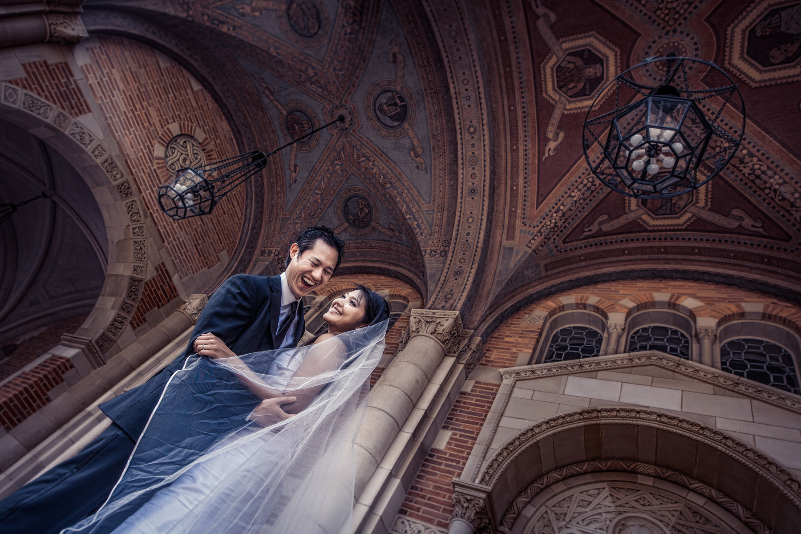
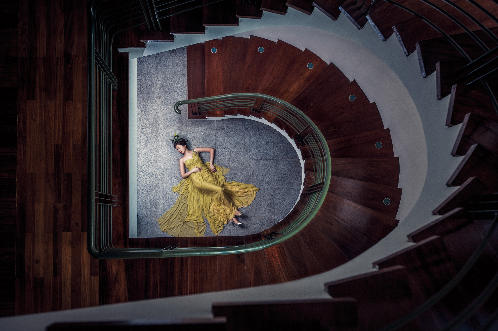
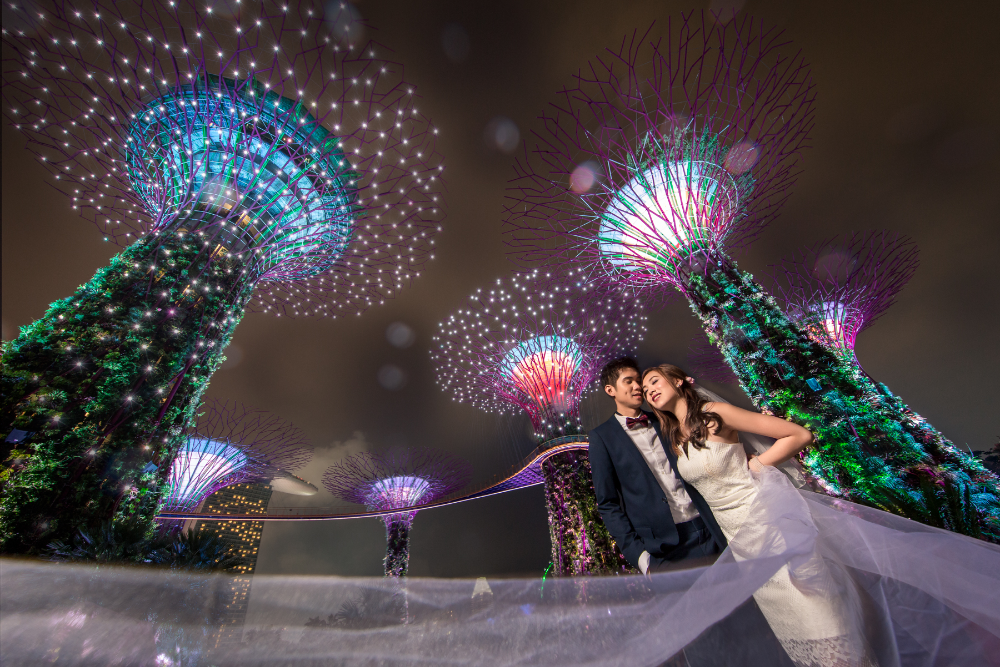
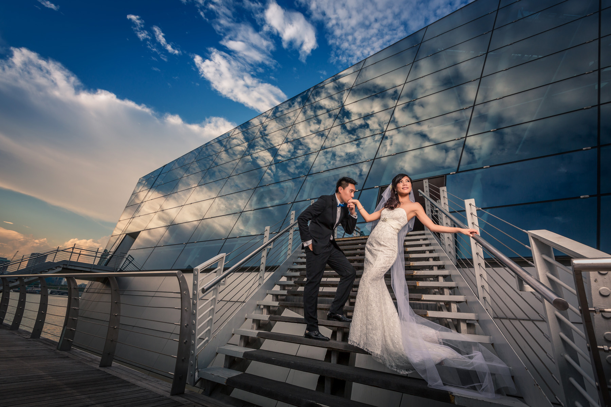

MEET OUR YOUTH MENTORS

BENNY ANG

STEPHEN LOH

TRISTON YEO
As a young photographer, you might have just started your photography journey. It is often a long and exciting journey, but also one filled with uncertainty. Sometimes, all we need is a little more guidance to guide us along this winding road.
With that in mind, NUSPS has partnered with three outstanding photographers in Singapore to deliver an unparalleled mentorship experience for our Top 3 Youth Category Winners. We hope to provide young, budding photographers with a chance to get exclusive access to the minds of these experienced professionals, and also have your photography works reviewed by them. Whether you are a mere hobbyist taking your first step in improving your photography, or someone looking to take the great leap to becoming a professional photographer, this mentorship experience will be one that you will never forget.
Benny Ang
Benny Ang is a wedding, corporate & travel photographer with two decades of professional photography experience. He is also a member of the exclusive Fujifilm X-Photographer ambassador program, crafting his vision with his Fujifilm X-mount system. Benny sees photography as an extension of his vision - infusing his photographs with his thoughts, emotions and life perspective, expressed in the instant of an exposure.


Stephen Loh
Stephen Loh, the founder of Lyrical Moments, is one of Singapore’s most awarded photographers, specialising in wedding and portrait photography. As an active member of the esteemed Master Photographers Association in the United Kingdom, he was named the Overseas Wedding Photographer of the Year in their annual print competition in 2009 and 2010. In 2011, he emerged as the Grand Champion in Canon’s inaugural Creative Asia Awards Competition.
Stephen’s unique style and vision have granted him international recognition; building his overseas clientele, and giving him various opportunities to photograph people all around the world. As a firm believer in education, he regularly conducts photography workshops and talks to share and learn from other photographers. He is also the spokesperson for esteemed brands like Canon and Samsung, and works closely with them to see how products can be made better for photographers.
In his free time, he enjoys a good cup of coffee and cooking up a storm in the kitchen.






Triston Yeo
As a Fellow of the Master Photographer Association, Triston has been travelling around the Asia Pacific region to accreditate local photographers who want to join the professional guildhouse. Being a commercial photographer, Triston has worked on a wide range of projects for various MNCs, statutory boards and educational institutions such as AIG Group, Credit Suisse and Four Season Hotel Group. He has also worked with various tourism organizations such as the Sri Lanka Tourism Bureau & Hungarian Embassy to bring out the hidden beauty of these countries through his photographs.
Being acknowledged as one of Asian Geographic’s Best Photographers of the Decade, educating budding photographers is another of Triston’s personal missions. He was awarded Top prize in the Place Category with his entry entitled “Bathing in Budapest” in the National Geographic 2014 Photo Contest. Till today, his ultimate goal is to become one of National Geographic’s permanent pool of photographers.